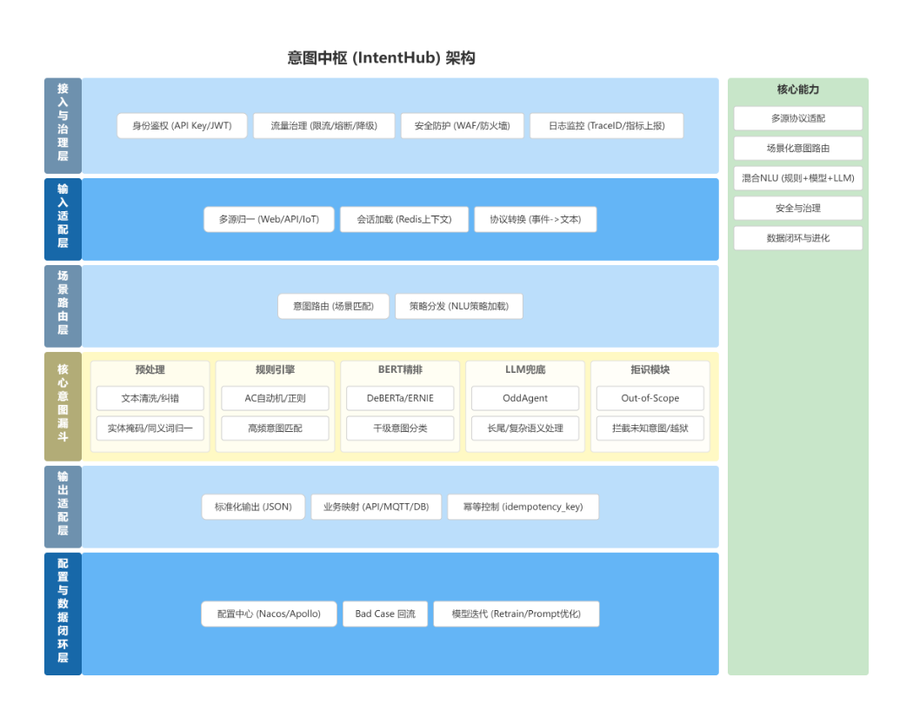
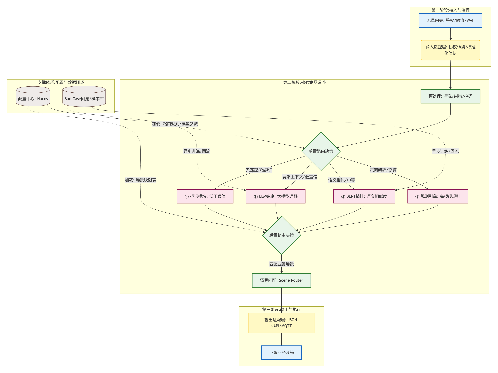
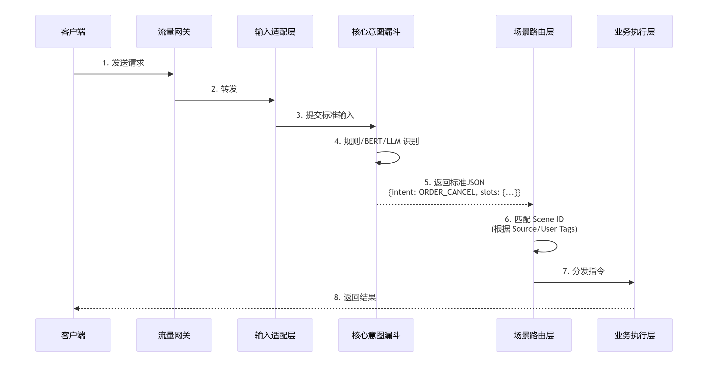

v1 必做
- 标准 Envelope 输入模型和 IntentResult 输出模型。
- REST API 接入，Webhook 预留。
- Redis 会话上下文、规则识别、模型接口、LLM 兜底接口。
- 拒识 decision、双阶段场景路由、配置版本、TraceID、核心指标。
- Bad Case 记录，用于后续标注和模型迭代。
- DB Schema、槽位生命周期、幂等重试、同步/异步分离。
v1 规划结论
这版规划最重要的差异化是三件事：双阶段路由、LLM 受控、防腐层。 它们决定系统不是普通 NLU 分类器，而是能治理多业务动作的意图中枢。
按必做、可选和暂不做划清第一版边界，后续评审和排期都围绕这个边界展开。
这是区别于普通 NLU 系统的关键：不只识别意图，还要治理识别策略、业务动作和系统边界。
先选怎么认，再选谁来干。前置路由按租户、来源、渠道选择规则集、模型版本、阈值和 LLM 开关；后置路由按意图、槽位、置信度选择业务动作。
LLM 是最后一道防线，不是主力。只处理规则和模型覆盖不了的低置信度、长尾表达和复杂指代，并且必须有超时、预算、熔断、降级、注入防护和审计。
输出适配层只发指令，不碰业务数据。v1 仅允许 API、MQ、Webhook、MQTT 交互，严禁把意图中枢做成通用业务数据库写入器。
建议把原六层架构落成七个逻辑模块，明确运行链路和平台能力的边界。
鉴权、限流、WAF、TraceID、灰度入口。外部入口治理尽量前置，保护核心识别服务。
协议转换、Envelope 标准化、会话上下文加载，屏蔽 Chat、IVR、Webhook、IoT 差异。
预处理、规则识别、模型分类、LLM 兜底、拒识，核心要求是可解释、可降级。
已确认双阶段路由：前置选策略，后置选业务动作，按租户、渠道、意图、置信度决定场景和下游。
防腐层：只发指令，不碰业务数据。v1 仅允许 API、MQ、Webhook、MQTT，不做通用直写 DB。
意图、槽位、同义词、路由、阈值、模型版本管理，按 tenant + scene + version 发布和回滚。
Bad case、人工修正、低置信度样本、下游失败样本沉淀，服务后续训练和优化。
日志、指标、追踪、审计，确保每次识别能回溯到配置版本和模型版本。
第一版建议采用模块化单体加独立模型服务；当 QPS、团队边界或隔离要求升高后再拆分。
intent-hub-api：接入、输入适配、核心路由、输出适配、配置读取。intent-model-service：BERT/DeBERTa/ERNIE 分类推理，独立部署。intent-admin：配置管理 API 或最小管理后台。intent-worker：bad case 回流、异步日志、数据导出、后续训练数据准备。这是 2026-06-01 已确认的 P1 默认技术基线。执行时只需在网关和模型服务两个条件化选项上按团队能力定版。
| 领域 | 主选 | 备选 | 取舍 |
|---|---|---|---|
| 后端框架 | Java 17/21 + Spring Boot 4.x | Spring Boot 3.5.x | 采用 Java LTS 和最新 Spring Boot 大版本；若企业基线未放开 4.x，短期可落 3.5.x 并保持迁移友好。 |
| 网关 | Apache APISIX 或 Spring Cloud Gateway | Nginx/OpenResty | 有 K8s/独立网关平台选 APISIX；深度 Spring 体系、低运维面选 Spring Cloud Gateway。 |
| 配置中心 | Nacos 3.x | Apollo | Nacos 负责服务发现与运行时配置分发；意图配置事实源仍是 Admin Portal + PostgreSQL config_version。 |
| 数据库 | PostgreSQL 16+ | MySQL 8.x | PostgreSQL JSONB 适合 recognition_trace、context_snapshot、latency_breakdown 等半结构化数据。 |
| 缓存/会话 | Redis 7.x | Valkey/KeyDB | 用于会话缓存、配置缓存、限流辅助、分布式锁和短期幂等状态。 |
| 消息队列 | Kafka | RocketMQ/RabbitMQ | 承载训练数据回流、bad case 异步标注、审计事件、异步动作和最终一致性回调。 |
| 规则引擎 | 轻量规则 + AC 自动机/正则 | Drools | P1 不默认引入 Drools，先保证高频意图可解释、可热更新。 |
| 模型服务 | Python/FastAPI 或 Triton | Java ONNX Runtime | P1/P2 用 FastAPI stub 或快速迭代服务；GPU、高并发、多模型场景升级 Triton。 |
| LLM 接入 | Spring AI 抽象 + Spring AI Alibaba 默认实现 + Provider Adapter | LangChain4j / 直接 SDK | P1 默认用 Spring AI Alibaba 对接通义/DashScope；核心仍保持 Spring AI/端口抽象，LLM 受控兜底。 |
| 可观测 | OpenTelemetry + Prometheus + Grafana + Loki/ELK | SkyWalking | 跨 Java、Python、网关和 worker，打通 trace、metrics、logs。 |
已有 APISIX 平台和 K8s 网关治理能力时选 APISIX；否则 P1 优先用 Spring Cloud Gateway 跑通闭环。
P1 先用 FastAPI stub/mock 验证识别闭环；GPU、高并发、多模型生产推理阶段再升级 Triton。
P1 采用 Spring AI Alibaba 作为默认 Provider 实现，但只放在基础设施适配层。应用层和领域层保持 Spring AI/自定义端口抽象，避免通义或 DashScope 细节侵入核心识别策略。
以下事项已确认，后续需求、设计、实施和验收均按这些约束执行。
| 风险/问题 | 确认状态 | 固化方案 |
|---|---|---|
| 数据流向图 v2 | 确认 | 采纳 数据流向图v2.png 作为当前数据流向基线；DB Schema 仍以 P0 契约与 Schema 设计为准。 |
| 场景路由顺序 | 确认 | 采用双阶段路由：前置选策略，后置选业务动作。 |
| LLM 兜底边界 | 确认 | LLM 是最后一道防线，不是主力；仅作为受控兜底，配置熔断、降级、注入防护、超时、预算和审计。 |
| 防腐层/输出适配 | 确认 | 输出适配层只发指令，不碰业务数据；v1 严禁通用直写业务数据库，仅允许 API、MQ、Webhook、MQTT。 |
| 租户与配置版本 | 确认 | 全链路按 tenant_id + scene_id + version 管理，支持回滚。 |
| 槽位生命周期 | 确认 | 纳入 v1，支持待确认、已过期和缺槽追问。 |
| 拒识策略 | 确认 | 标准化输出 decision 字段，例如 REJECTED、HANDOFF。 |
| 时序图响应链路 | 确认 | 区分同步识别与异步执行，异步通过 MQ/Callback/Webhook。 |
| 幂等与重试 | 确认 | 补幂等表设计，防止下游重复执行。 |
| 多模态 | 确认 | v1 延期，仅预留字段，不做实际解析。 |
P0 已产出可评审设计稿，目标是在开发前冻结输入输出契约、核心枚举、路由模型、LLM 策略、防腐层动作和数据库表结构。
Envelope、IntentResult、Decision、InputType、SlotState、RouteStage。
双阶段路由模型、LLM 受控策略模型、防腐层 downstream action 模型、幂等状态模型。
配置域和运行域 DB Schema，包括配置版本、意图、槽位、路由、策略、trace、bad case、idempotency 和 audit。
详见 docs/codex/v1/designs/intent-hub-p0-contract-schema-design.md。P0 评审结论已通过（Approved），可以进入 P1 最小识别闭环开发。
配置管理一致性是 P1 必须优先解决的风险。禁止手工改数据库作为正式配置发布方式，必须配套 Admin Portal 或 GitOps 流程，确保配置可审计、可回滚、可同步。
P1 已完成最小工程闭环，P2 已进入试点扩展：识别入口、规则识别、双阶段路由、配置治理、已发布配置读取、trace 查询、bad case 查询、标注导出和幂等记录均已落地。
默认采用轻量 Admin Portal：草稿、校验、发布、回滚、审计、导入导出。GitOps 作为后续增强。
订单查询、订单取消、库存 Webhook。覆盖同步成功、异步接收、缺槽澄清、拒识和幂等。
P1 验收用例全部通过；trace 可按 trace_id 查询；bad case 可筛选；Output Adapter 不触碰业务数据库。
详见 docs/codex/v1/designs/intent-hub-p1-minimal-loop-design.md。已创建 intent-hub-domain、intent-hub-application、intent-hub-infrastructure、intent-hub-interfaces 四个模块，并实现最小识别闭环。当前已使用 JDK 17.0.19 与 Maven 3.9.7 完成构建；P1-2 自动化验收、P1-3 PostgreSQL/Flyway 联调、P1-4 配置治理与已发布配置读取、P1-5 可观测查询、P1-6 退出评审、P2-1 动态 scene 读取、P2-2 Bad Case 标注流转、P2-3 最小指标采集、P2-4 模型服务适配与 P2-5 LLM 受控兜底均已完成，并已补齐 HTTP timeout 绑定、模型服务失败关闭、fallback 指标口径、LLM 预算消费最小计数、持久化审计、外呼前日预算原子预占门禁、管理端 confirmed/reserved/pending 预算查询、同步失败释放、默认关闭的 stale pending 后台补偿、补偿指标、基础告警快照、运维样例总入口、生产化落地检查清单、观测告警试点接入计划、试点执行记录模板、告警演练场景、本地观测栈预检脚本、本地观测栈配置校验脚本、Prometheus scrape/告警规则样例、Alertmanager 路由样例、Grafana 看板样例、SLO 样例、本地观测栈样例、告警 Runbook、模型 adapter 本地 HTTP 冒烟、模型服务健康检查、本地真实联调、模型服务容器化配置样例、模型服务端到端 smoke 脚本、模型服务健康详情透出、scene 级 model_policy 门禁、模型策略 JDBC/Admin 冒烟、Spring AI Alibaba ChatClient 预接入和 DashScope 沙箱冒烟 profile/script 准备；全量测试通过，模型服务健康详情与模型策略门禁已通过相关模块测试，真实 PostgreSQL 空库已验证 Flyway V1/V2/V3、Admin modelPolicy 写入/查询和 MODEL_POLICY:DISABLED 识别路径。
P1-1 构建启动已通过，P1-2 自动化验收已通过，P1-3 PostgreSQL/Flyway 持久化闭环已通过真实库联调，P1-4 配置治理 API 与已发布配置读取已落地，P1-5 已补齐 GET /api/v1/admin/observability/traces/{traceId} 和 GET /api/v1/admin/observability/bad-cases，P1-6 退出评审结论为有条件通过。P2-1 已补齐动态 scene 读取最小闭环：local-jdbc 已发布配置读取支持 metadata.scene_id / metadata.sceneId 显式选择 scene，未指定时读取租户最新 PUBLISHED scene，未命中时回退内置 order-scene/v1-p1。P2-2 已补齐 Bad Case 标注流转：支持标注、关闭、导出训练样本和导出后标记。P2-3 已补齐最小指标采集：支持 GET /api/v1/admin/metrics JSON 快照、GET /api/v1/admin/metrics/prometheus 文本导出和 GET /api/v1/admin/metrics/alerts 基础告警快照，并已区分 MODEL_FALLBACK、LLM_FALLBACK、LLM 预算消费指标、补偿指标与 P95/P99 长尾耗时指标。P2-4 已接入模型服务 adapter：识别顺序为 Rule -> Model -> LLM，默认关闭/no-op，FastAPI 风格调用 POST {baseUrl}/recognize，并通过 GET {baseUrl}/health 接入 GET /api/v1/admin/health 的 model_service.healthy、modelVersion 和 threshold 健康详情；已支持从已发布 nlu_strategy.model_policy 读取模型参与开关和最低置信度，按 scene 记录 MODEL_POLICY:DISABLED / MODEL_POLICY:LOW_CONFIDENCE；模型服务异常会记录 MODEL_FALLBACK:CLOSED 并失败关闭；adapter 已通过 JDK 本地 HTTP server 冒烟，并已新增 examples/model-service-fastapi 示例；本地真实联调已验证 model_service.healthy=true 和 cancel A100 命中 ModelRecognitionPolicy；当前已补 Dockerfile、Docker Compose、scripts/validate-model-service-container.ps1、scripts/smoke-model-service-e2e.ps1 和 scripts/smoke-model-policy-jdbc.ps1，并已验证容器模型服务与 Intent Hub jar 的端到端联调，以及真实 PostgreSQL/Flyway 下 Admin modelPolicy 写入、查询、发布和识别读取链路。P2-5 已补齐 LLM 受控兜底：默认关闭且预算为 0，只有全局治理配置与 scene 级 llm_policy 同时允许才触发；provider 为 spring-ai-alibaba 且存在 ChatClient.Builder 时优先走 Spring AI Alibaba ChatClient，否则保留 HTTP 契约 fallback；provider 异常时记录 LLM_FALLBACK:{fallbackDecision} 并失败关闭；模型服务和 LLM HTTP adapter 均已绑定 connect/read timeout；LLM 外呼尝试前会写入最小预算消费指标和 llm_budget_usage 持久化审计，并在当日用量达到全局预算与 scene 预算较小值时失败关闭；管理端已提供 GET /api/v1/admin/llm/budget-usage 查询 confirmed 明细用量、reserved 预占用量和 pending 预占差额，同步外呼失败会释放本次预占；默认关闭的后台补偿可校正 stale pending 预占，并通过 intent_hub_llm_budget_reconciliations_total 暴露补偿校正数量，基础告警快照可消费模型 fallback、LLM fallback、补偿、平均耗时、P95/P99 长尾耗时和最大耗时指标；ops/README.md 已提供运维样例总入口，串联 Prometheus scrape、告警规则、Alertmanager 路由、Grafana 看板、SLO、本地观测栈和告警 Runbook；ops/production-readiness-checklist.md 已提供生产化落地检查清单；ops/pilot-rollout-plan.md 已提供观测告警试点接入计划；ops/pilot-execution-record-template.md 已提供试点执行记录模板；ops/alert-drill-scenarios.md 已提供告警演练场景；scripts/check-observability-local.ps1 已提供本地观测栈预检脚本；scripts/validate-observability-compose.ps1 已提供本地观测栈配置校验脚本。DashScope 沙箱冒烟 profile/script 已准备；下一步建议在提供沙箱凭证后补真实外呼证据，并继续推进生产化 Prometheus/Grafana 告警、模型服务样本/阈值/版本扩展和真实多实例压测。
| Maven Module | 职责 | 关键内容 |
|---|---|---|
intent-hub-application | 应用层 | RecognizeAppService 编排识别用例，调用领域服务。 |
intent-hub-domain | 领域层 | recognition、conversation、config；包含 RecognitionTask、IntentRecognizer 和 Rule/Model/Llm 策略抽象。 |
intent-hub-infrastructure | 基础设施层 | DB、Redis、Kafka/RocketMQ、LLM 适配；llm/TongyiLlmAdapter.java 使用 Spring AI Alibaba。 |
intent-hub-interfaces | 用户接口层 | web REST API 与 admin 管理后台 API，只做入参出参转换。 |
intent-hub-domain 不依赖 Spring AI Alibaba、DB、Redis、Kafka 或 Web；Provider 替换只能发生在 intent-hub-infrastructure/llm，不能侵入 recognition/policy。
把场景路由拆成前置策略选择和后置动作选择，解决原资料里路由顺序不一致的问题。
鉴权、限流、安全拦截、生成 TraceID。
转为 Envelope，加载 session 上下文。
按租户、来源、渠道选择策略、模型、阈值和 LLM 开关。
预处理、规则、模型、受控 LLM 兜底、拒识 decision。
按意图、槽位、置信度选择 API/MQ/Webhook/MQTT 动作。
同步返回 IntentResult；异步执行记录幂等、trace 和 bad case。
开发前最该先定的不是页面，而是输入、输出、配置和追踪数据模型。
request_id、tenant_id、source、channel、session_id、user_id、input_type、text、event、metadata、timestamp
request_id、trace_id、scene_id、intent_code、slots、confidence、recognition_path、decision、idempotency_key、debug
意图、槽位、同义词、场景、策略、路由规则、模型版本、阈值、发布版本、回滚版本，统一按 tenant_id + scene_id + version 管理。
预处理结果、规则候选、模型候选、LLM 结果、拒识原因、最终意图、配置版本、模型版本、分层耗时。
tenant、scene、config_version、intent_definition、slot_definition、synonym_mapping、nlu_strategy、scene_routing_rule
conversation_session、slot_state、recognition_trace、bad_case、idempotency_record、audit_log
EMPTY、EXTRACTED、PENDING_CONFIRM、CONFIRMED、EXPIRED，支持缺槽追问、上下文继承、校验和归一化。
idempotency_key、请求摘要、下游动作、执行状态、重试次数、过期时间，防止重复扣款、重复下单等风险。
从需求到生产化增强，每个阶段都有明确产物和验证方式。
定义 Maven 多模块结构、DTO、错误码、拒识码、TraceID、OpenAPI 示例和 DB Schema。
REST 入口、输入适配、会话、预处理、规则引擎、双阶段路由、标准输出。
抽象模型接口，接入分类服务；LLM 默认实现采用 Spring AI Alibaba，但保持 Spring AI/端口抽象，并加入预算、审计、熔断和注入防护。
建立意图、槽位、同义词、场景、策略、路由表，按 tenant + scene + version 发布和回滚。
记录 RecognitionTrace、bad case、idempotency_record、Prometheus 指标和 OpenTelemetry trace。
鉴权、租户隔离、RBAC、限流、熔断、降级、异步执行、灰度策略。
原始资料中的风险项已完成确认，下面不再是建议，而是 v1 设计约束。
数据流向图v2.png 已作为当前数据流向基线，明确三阶段流转和双阶段路由。保留原始图作为讨论依据。当前 HTML 已采用数据流向图 v2，并融合其三阶段流转、双阶段路由、Nacos 配置加载和 Bad Case 回流。

展示接入治理、输入适配、场景路由、核心意图漏斗、输出适配、配置闭环。

当前数据流向基线：接入与治理、核心意图漏斗、输出与执行三阶段；前置路由先选识别策略，后置路由再选下游动作。

已确认区分同步识别与异步执行，并补充失败补偿和幂等判重。
P1 代码第一步已落地，JDK 17 与 Maven 构建环境已可用。已执行 mvn clean package，并通过 java -jar intent-hub-interfaces/target/intent-hub-interfaces-0.1.0-SNAPSHOT.jar 启动服务；
POST /api/v1/intent/recognize 已验证订单查询、订单取消、缺槽澄清、未知意图拒识和重复异步请求幂等。P1-3 已把 trace、bad case、idempotency 的 JDBC 适配器和 Flyway 表结构落地，并使用 local-jdbc profile 连接 Docker PostgreSQL 16 完成真实联调。P1-4 已实现配置版本草稿、查询、校验、发布、回滚、审计、导入导出 API，并支持 POST/GET /api/v1/admin/config/versions/{version}/{objectType} 管理意图、槽位、同义词、策略、路由、下游动作；发布 v-published-read-1 后识别链路已命中 INVOICE_QUERY/SUCCESS。P1-5 已支持按 trace_id 查询识别路径，并按租户、场景、意图、状态筛选 bad case。P1-6 退出评审结论为有条件通过。P2-1 已完成动态 scene 读取：metadata 指定 scene、租户最新发布 scene 和内置回退均有自动化测试覆盖。P2-2 已完成 Bad Case 标注、关闭、导出训练样本和导出后标记。P2-3 已完成最小指标采集，接口包括 GET /api/v1/admin/metrics、GET /api/v1/admin/metrics/prometheus 和 GET /api/v1/admin/metrics/alerts，并已补 LLM 预算消费最小指标、基础告警快照和 P95/P99 长尾耗时指标。P2-4 已完成模型服务 adapter，默认关闭时不影响规则主链路，开启后按 FastAPI 风格请求模型服务，并已补 adapter 本地 HTTP server 冒烟、Admin health 健康检查、本地真实联调、模型服务容器化配置样例、端到端 smoke 脚本、模型服务健康详情透出、scene 级 model_policy 门禁、模型策略 JDBC/Admin 冒烟和 P95/P99 长尾耗时指标。P2-5 已完成 LLM 受控兜底，覆盖全局治理、scene 策略读取、预算门禁、Spring AI Alibaba ChatClient 预接入、HTTP 契约 fallback、有限重试、fallback 失败关闭、外呼尝试预算记账、持久化审计、日预算原子预占门禁、管理端 confirmed/reserved/pending 查询、同步失败释放、默认关闭的 stale pending 后台补偿、补偿指标、基础告警快照、Prometheus scrape/告警规则样例、Alertmanager 路由样例、Grafana 看板样例、SLO 样例、本地观测栈样例、告警 Runbook、生产化落地检查清单、观测告警试点接入计划、试点执行记录模板、告警演练场景、本地观测栈预检脚本和本地观测栈配置校验脚本，并已准备 DashScope 沙箱冒烟 profile/script。下一步建议在提供沙箱凭证后补真实外呼证据，并继续推进生产化 Prometheus/Grafana 告警、模型服务样本/阈值/版本扩展和真实多实例压测。